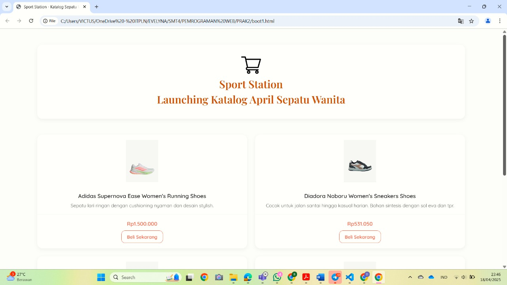
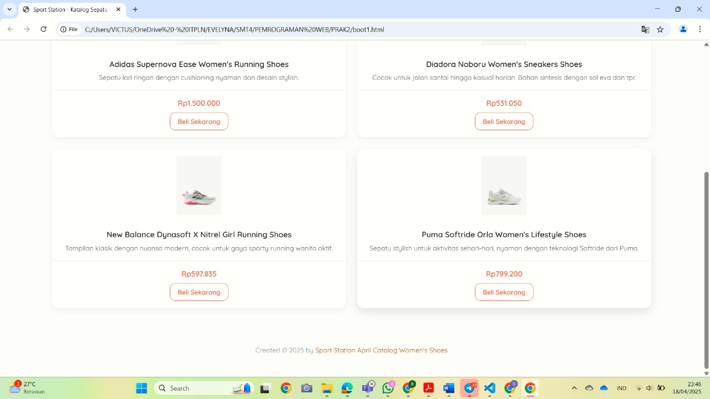

A. Menggunakan CSS dan JavaScript dalam Pemrograman Web
1. Alasan Menggunakan CSS dalam Pemrograman Web :
- Menggunakan CSS dapat memudahkan kita mengatur warna, font, ukuran, margin, padding, dan masih banyak lagi. Sehingga membuat tampilan halaman menjadi menarik.
- CSS dapat mempermudah pengelolaan kode yang dimana dapat memisahkan konten (HTML) dari desain sehingga kode lebih terorganisir dan mudah dikelola.
- Dengan bantuan media queries, CSS dapat membuat situs web beradaptasi dengan berbagai ukuran layar (desktop, ponsel, dan tablet).
- Terdapat Framework CSS yang menyediakan komponen siap pakai guna membangun situs web yang responsif dan cepat.
2. Alasan Menggunakan JavaScript dalam Pemrograman Web :
- Menggunakan JavaScript dapat membuat halaman web merespon aksi pengguna, seperti kita bisa klik tombolnya, input formulir, atau scroll-scroll.
- JavaScript memudahkan kita memanipulasi elemen HTML langsung dari browser. Disini kita dapat menambahkan, memodifikasi, dan menghapus konton contohnya.
- Dengan JavaScript kita dapat mengubah gaya CSS elemenya secara langsung sesuai interaksi pengguna.
- JavaScript dapat diguankan membuat animasi yang lebih kompleks daripadi CSS.
B. Integrasi CSS dan JavaScript
CSS digunakan untuk mendesain tampilan visual dan membuat situs yang responsif, sedangkan JavaScript menambahkan interaktivitas dan logika dinamis. Integrasi dapat dilakukan melalui :
<link>di bagian<head>HTML untuk file eksternal.- Inline CSS dengan atribut
style. - Internal CSS di dalam tag
<style>.
C. Keuntungan JavaScript dan CSS
| JavaScript | CSS |
|---|---|
| Menambahkan interaktivitas | Memisahkan konten dan tampilan |
| Manipulasi DOM secara dinamis | Konsistensi desain |
| Animasi/efek visual dinamis | Layout responsif dengan media queries |
| Komunikasi asinkron | Perubahan desain tanpa ubah HTML |
| Untuk web & mobile app | Kontrol tampilan elemen |
D. Keuntungan Menggunakan Bootstrap
Bootstrap merupakan framework fron-end open-source yang mempermudah dan mempercepat proses pembuatan desain pada halaman web yang responsif, modern, dan konsisten. Beberapa keuntungan menggunakan Bootstrap :
- Layout fleksibel & responsif dengan sistem grid 12 kolom.
- Komponen UI siap pakai seperti tombol, navigasi, modal, dsb.
- Dapat dikustomisasi melalui variabel CSS.
- Desain konsisten dan profesional.
- Open-source dan terus berkembang.
E. Contoh Penggunaan Bootstrap
Contoh penggunaan komponen Bootstrap dalam halaman web :


<div class="card h-100">...— Bootstrap Card<section class="row row-cols-1 row-cols-md-2 g-4">— Grid System<a href="#" class="btn btn-outline-primary btn-sm">Beli Sekarang</a>— Buttons<main class="container py-5">— Utility Class<link href="https://cdn.jsdelivr.net/npm/bootstrap@5.3.0/dist/css/bootstrap.min.css" rel="stylesheet">— Menggunakan CDN Bootstrap
Dengan Bootstrap, kita bisa membuat halaman yang responsive, hemat waktu, dan terlihat profesional tanpa harus menulis CSS dari awal.